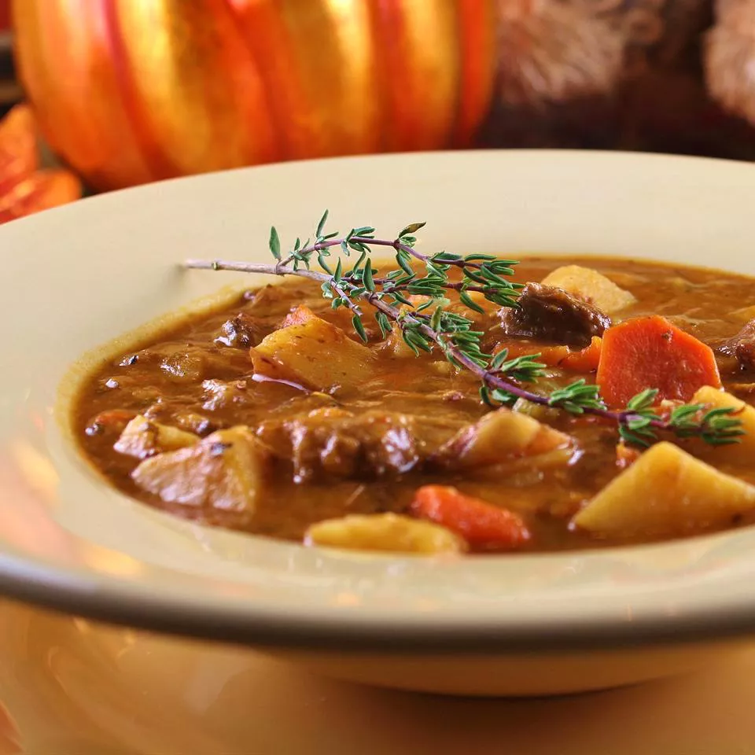

Beef Stew

Description
This hearty beef and vegetable stew that can be made in the
slow-cooker is a family favorite. It is also the backbone for
an excellent beef soup, if you actually find yourself with
leftovers.
Ingredients
- 2 tablespoons olive oil
- 2 pounds lean top round, trimmed and cut into 1-inch cubes
- 2 large sweet onions, diced
- 2 cups large chunks of celery
- 4 large carrots, peeled and cut into large rounds
- 1 pound crimini mushrooms, sliced
- 2 tablespoons minced garlic
- 2 cups dry red wine
- 4 large tomatoes, chopped
- 1 ½ pounds red potatoes (such as Red Bliss), cut into 1-inch chunks
- 1 tablespoon dried basil
- 1 teaspoon dried thyme
- 1 teaspoon dried marjoram
- ½ teaspoon dried sage
- 1 quart beef stock
- 2 cups tomato sauce
Steps
- Heat olive oil in a large skillet over medium-high heat. Cook beef in batches in hot oil until browned completely, about 5 minutes per batch. Remove browned beef cubes to a plate lined with paper towels, keeping skillet over heat and retaining the beef drippings.
- Cook and stir onion, celery, and carrots in the retained beef drippings until just softened, 2 to 3 minutes. Stir mushrooms and garlic into the onion mixture.
- Pour red wine into the pan; bring to a boil while scraping the browned bits of food off the bottom of the pan with a wooden spoon. Continue cooking the mixture until the wine evaporates, 7 to 10 minutes. Stir tomatoes into the mixture.
- Return beef to skillet with potatoes, basil, thyme, marjoram, and sage. Pour beef stock and tomato sauce over the mixture. Bring the liquid to a simmer.
- Reduce heat to low and simmer until the beef is very tender and the sauce is thick, 4 to 6 hours.